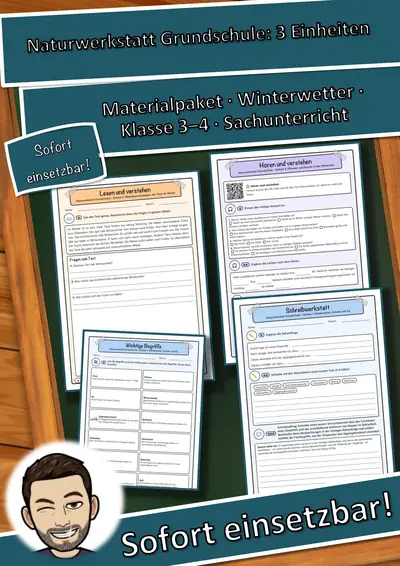
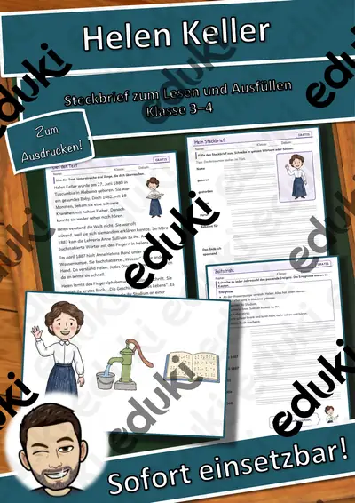

Persönlichkeiten-Kartei Astronomie und Raumfahrt – Lesekartei mit 22 Persönlichkeiten, 3-fach differenziert (Klasse 3–6)
Wer hat zuerst gesagt, dass sich die Erde um die Sonne dreht? Wer flog als Erster ins Weltall? Mit meiner Persönlichkeiten-Kartei lernen Kinder der Klassen 3–6 22 Forscherinnen, Forscher und Raumfahrer kennen – von Nikolaus Kopernikus über Galileo Galilei, Caroline Herschel und Katherine Johnson bis zu Juri Gagarin, Neil Armstrong und Alexander Gerst. Auch die Bayern Simon Marius und Joseph von Fraunhofer sind dabei.
So ist die Kartei aufgebaut:
- Infokarten im A5-Format (2 je Seite): freundliches, gezeichnetes Porträt, Lebensdaten, eine neugierig machende Frage und ein kurzer Sachtext
- getrennte Aufgabenkarten „Teste dich!“ mit gleicher Nummer und gleichem Namen (richtig/falsch und Auswahlaufgaben)
- Lösungskarten für die Kontrollstation
Dreifach differenziert (★/★★/★★★): Jede Person gibt es in drei Textfassungen mit passenden Aufgaben. ★ kurze Sätze und große Schrift, ★★ mehr Einzelheiten, Jahreszahlen und Namen, ★★★ längere Sätze und Fachwörter.
Enthalten (72 Seiten):
- Hinweise für Lehrkräfte mit Ablauf, Lernzielen, Sachhinweis und Lehrplanbezug (LehrplanPLUS Bayern: HSU 3/4, NT 5/6, Deutsch)
- Zeitleiste aller Personen mit Zeitstrahl-Aufgabe
- 66 Infokarten und 66 Aufgabenkarten (22 Personen × 3 Stufen) plus Blanko-Karten für eine eigene Person
- Lösungskarten für alle drei Stufen
- Steckbrief zum Auswählen in drei Stufen (★ mit Wortspeicher und Satzanfängen) und Musterlösung
- Kartei-Pass, Ausmalbild für schnelle Kinder und Urkunde
Alle Lebensdaten habe ich mit zwei Quellen geprüft. Alle Bilder sind eigene Illustrationen, Fotos verwende ich nicht. Viel Freude beim Lesen und Forschen wünscht Snice
Ähnliche Materialien

Naturwerkstatt Grundschule Materialpaket: 3 Einheiten – Differenzierte Winterwerkstatt für Klasse 3 und 4 (Grundschule,

Naturwerkstatt Grundschule Naturwerkstatt Grundschule – Einheit 3: Pflanzen und Bäume in der Winterzeit – Differenzierte

Naturwerkstatt Grundschule Naturwerkstatt Grundschule – Einheit 2: Überlebensstrategien der Tiere im Winter – Differenzi

Naturwerkstatt Grundschule Naturwerkstatt Grundschule – Einheit 1: Winterwetter, Schnee und Eis – Differenzierte Winterw

Strom und Magnete – Forscherheft mit Versuchen, Postern und Stromkreis-Werkstatt Kl. 3–4

Weltall & Planeten zum Ausmalen und Basteln – Sonnensystem Kl. 2–4

Erste Hilfe für Kinder – Arbeitsheft mit Postern, Notruf & Wunden Kl. 2–4
